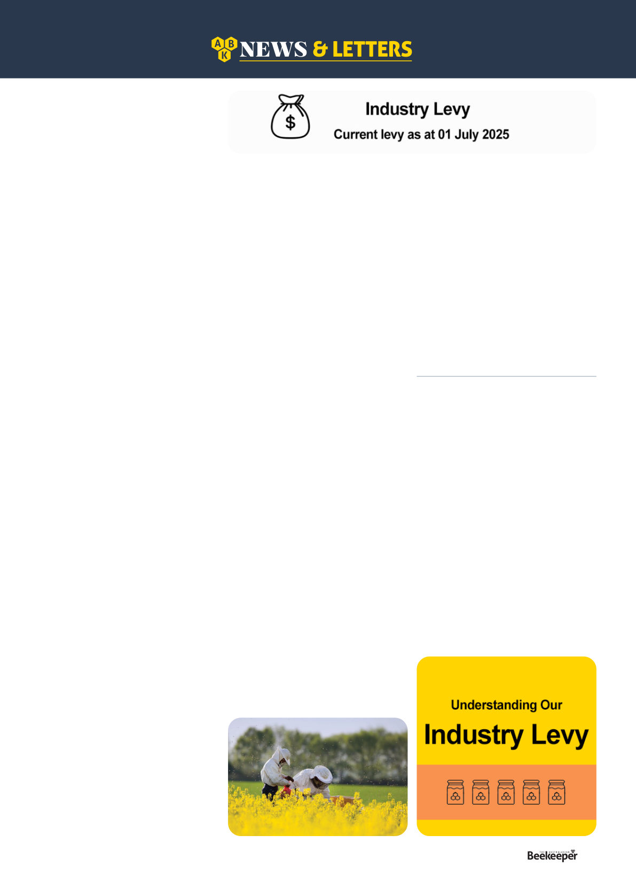

NEWS & LETTERS
stress for beekeepers, brokers and some
growers.
Whilst beekeepers have been busy on
almonds, here at AHBIC we have been
able to focus on getting a great deal of
administration and project proposal writ-
ing done.
Virus Baseline testing
As part of the National Transition to
Management Program a virus baselining
project has been delivered. The aim of
the project was to collect bee samples
from around Australia and test for exotic
viruses that might interact with varroa.
Eight viruses were tested for across 5,769
pools of samples with samples coming
proportionally from all states and terri-
tories.
Across all samples there were no new
viruses or exotic viruses to Australia
detected. This gives us great confidence
that viruses like deformed wing virus are
not lurking broadly across the bee pop-
ulation at low levels. Interestingly, rhab-
dovirus 1 & 2 was only detected in areas
where varroa had established which
reaffirms that this virus arrived with the
varroa incursion.
For the endemic viruses for which
testing was undertaken there was a very
high prevalence of Black Queen Cell virus
(94.8% of all pools tested were positive),
Lake Sinai virus genotypes 1 & 2 (83.9%),
Sacbrood virus (82.2%) and Israeli Acute
paralysis virus (39.0%).
Almonds
A later-than-usual flowering across the
major production areas bought some
beekeepers time to get bees in, and
growers some additional time to source
last minute hives. A significant number of
hives were brought in from Queensland
into both Victoria and South Australia.
There was a small shipment of hives from
Western Australia delivered into South
Australia this year to make up some
shortfalls.
The almond footprint continues to
grow with the Almond Boards newly
released ‘Almond Insights’ publication
citing plantings are up 4% to 66,000ha.
The statistics also show that self-fertile
plantings are increasing to nearly 4,000ha
of the total plantings. Nonpareil still
dominates planting at 43% of all trees
in the ground.
Apimondia
The global organisation representing
beekeepers will hold their 49th congress
in Copenhagen during September 23-27.
The congress is being organised jointly by
the beekeeper associations in Sweden,
Norway and Denmark. The vision for
the congress is to showcase pure apiary
products, create unity and knowledge
sharing and together make the world
bloom.
It is fantastic to see several Australian
beekeepers travelling to attend the
congress. As the Australian member of
Apimondia, AHBIC appoints a delegate
to represent Australia at the General
Assembly. This congress the AHBIC
board has appointed Jodie Goldsworthy
as our official delegate. We thank Jodie
for agreeing to volunteer her time to rep-
resent Australia in the global conversa-
tions.
Red Dwarf Honey Bee Incursion in
WA
A total of 47 colonies have now been
found and destroyed, two more than
when I last reported. 27 abandoned nests
have been located and there is now only
one active foraging site of concern. All
the current detections are still within 2km
of the original IP, but all detections have
had Euvarroa present.
The response is now using drone tech-
nology to assist in surveying difficult ter-
rain and hard to reach areas. Over the
next period the teams will continue to
search for colonies using all available
tools and with greater funding surety the
response should accelerate.
The Month Ahead
During September, work will con-
tinue with the transition to manage-
ment program, DAFF and imported
honey and levies reform. The Manuka
Honey Association and B-QUAL AGMs
will be held and a number of meetings
with stakeholders have been scheduled
across the month.
I hope Spring brings good conditions
for those affected by drought and that
beekeepers are able to stay on top of var-
roa numbers.
Excerpt provided to ABK with permission from
AHBIC
What is the Honey Levy?
The honey levy is a federal compulsory
charge collected on all honey produced
and sold in Australia at the first point of
sale. It’s currently set at 5.6 cents per kilo-
gram, and it applies to both commercial
and amateur beekeepers who sell over
1,500kg per annum. While the amount
per kilo might seem modest, when
pooled across the nation’s beekeepers,
the levy becomes a vital source of indus-
try funding.
From 1 July 2025, the levy was
increased by 1 cent per kilogram from
4.6 to 5.6 cents per kilogram. This tem-
porary increase will be in place for six
years and is specifically designated to
repay the debt incurred from the national
response to the Varroa mite incursion.
This includes paying our share of the
Vol. 127 | No. 4 |
| 5